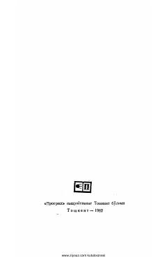

KInson hayoti va ruhiyatining turli davrlardagi aksini ochib beruvchi falsafiy roman.
Nobel mukofoti sovrindori Najib Mahfuzning ushbu romani inson hayoti va uning turli davrlardagi aksini o'zida mujassam etadi. Asar falsafiy mushohadalar va inson ruhiyatining chuqur tahliliga boy bo'lib, o'quvchini o'zligini anglashga chorlaydi.